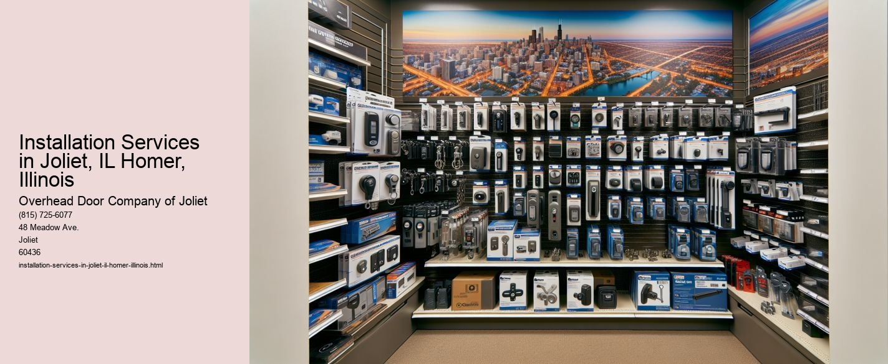

Serving Joliet, IL and surrounding Will County communities including:
Authorized Dealer for Overhead Door™ Openers and Accessories.

In the heart of Illinois, the cities of Joliet and Homer stand as testaments to the vibrant blend of history, culture, and modern progress. Both cities, while distinct in their own rights, share a common need for efficient and reliable installation services.
Joliet, known for its rich historical background and bustling economic activity, is a city that constantly evolves, adapting to the needs of its residents and businesses. In this dynamic environment, installation services are crucial. From electrical and plumbing installations to HVAC systems and state-of-the-art security systems, the demand for skilled professionals who can deliver quality installations is ever-present. These services ensure that homes and businesses in Joliet operate smoothly and efficiently, enhancing the quality of life and supporting economic growth.
Similarly, Homer, Illinois, though smaller, mirrors Joliet's need for top-notch installation services. As a community that values both tradition and innovation, Homer requires installations that respect its heritage while embracing modern advancements. This dual focus is evident in the way new constructions and renovations are approached. Whether it's installing energy-efficient appliances, modern lighting systems, or advanced network infrastructures, the emphasis is on sustainability and functionality.
In both Joliet and Homer, the installation service industry is not just about the physical act of installing equipment or structures. It's about understanding the specific needs of a community and delivering solutions that are tailored to those needs.
Moreover, the installation services sector in these cities is a significant contributor to the local economy. It provides employment opportunities for skilled workers and drives business for local suppliers and manufacturers. This economic impact is a testament to the importance of installation services in fostering community development and prosperity.
As Joliet and Homer continue to grow, the role of installation services will undoubtedly expand. Emerging technologies and increasing demands for energy efficiency and smart home solutions are setting new standards for what constitutes a successful installation. Service providers will need to stay ahead of these trends, continually updating their skills and offerings to meet the evolving needs of their clients.
In conclusion, installation services in Joliet and Homer, Illinois, are more than just a practical necessity; they are a cornerstone of community development and sustainability. By ensuring that homes and businesses are equipped with the latest technologies and systems, these services enhance the livability and economic vitality of the region. As the cities look to the future, the integral role of installation services will remain, adapting to new challenges and opportunities with the same dedication and expertise that have served them well in the past.
Types of Garage Door Openers Elwood, Illinois